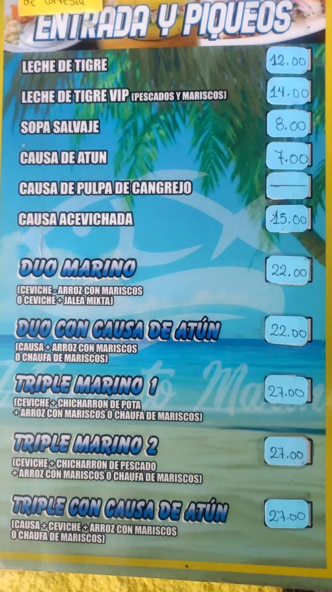
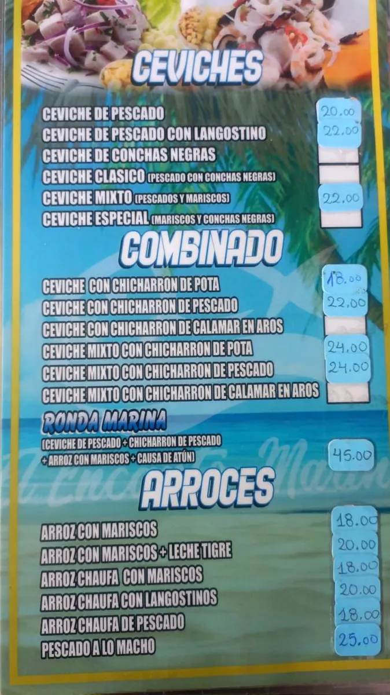
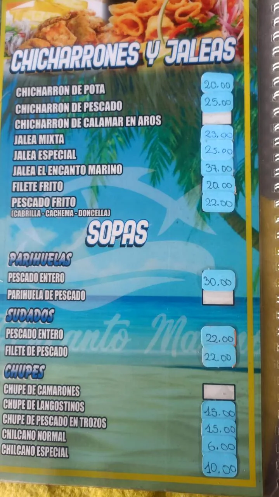
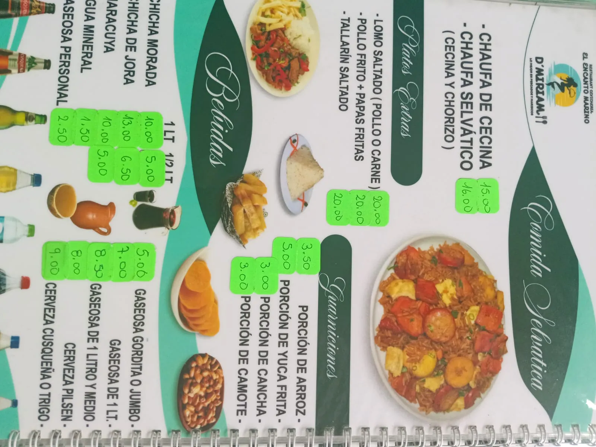

Encanto Marino D'Miriam
Estas imágenes son solo referencia hasta confirmar precios finales.




Este QR apunta directamente a esta carta digital.
Abrir carta digital
Consulta precios actualizados o disponibilidad.